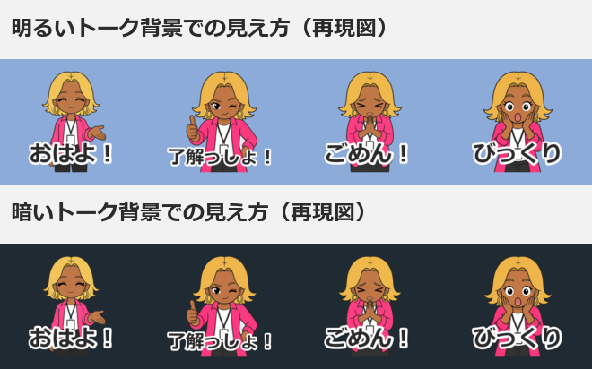

第0章 はじめに
この章でわかること
- 絵が描けなくてもLINEスタンプを作れる理由
- 生成AIが「できること」と「できないこと」の切り分け
- この教材を最後まで読むと何が完成するのか
- 著作権・肖像権で気をつける最低ライン
- 作業を始める前に用意しておくもの
絵が描けなくても、スタンプは作れます
結論から書きます。
いまは、絵が描けなくてもLINEスタンプを作れます。
理由は3つあります。
- 画像生成AIが、キャラクターの絵を描いてくれる
- ChatGPTやClaudeが、企画とセリフを一緒に考えてくれる
- 画像加工は、無料のツールで足りる
私自身、イラストの学校に通ったことはありません。
それでも、保育士あるある、タゴサク構文、麻雀キャラクター、ガングロコンサル、鮨職人、士業向け、AIロボット、動物キャラクター、ビジネス敬語、子育てあるある——このあたりのテーマでスタンプを企画し、制作し、申請してきました。
やってみてわかったのは、うまい絵よりも「使いたくなる場面があるか」のほうが大事だということです。
生成AIは「作業の相棒」です
生成AIは、次の3か所で強く効きます。
1. 企画
「誰が、どんな場面で使うのか」を一緒に整理してくれます。
自分だけで考えると、思いつきの30個で止まります。
AIと会話すると、80個くらい案が出て、そこから絞れます。
2. 文章
スタンプのセリフ、タイトル、説明文、SNSの投稿文。
このあたりは、AIが下書きを作って、人間が削るのが一番速いです。
3. 画像
キャラクターの絵を作ります。
ただし、ここが一番むずかしいところでもあります。
同じキャラクターを40枚ぶん、同じ顔で出し続けるのは、意外と手間がかかります。
この教材では、その手間を減らす方法を丸ごと書きます。
AIに丸投げしても売れません
ここは正直に書いておきます。
AIに「売れるLINEスタンプを作って」と頼んでも、売れるものは出てきません。
理由はシンプルです。
- AIは「誰が使うか」を知らない
- AIは「LINEのトーク画面でどう見えるか」を確認できない
- AIは「あなたの周りにいる人の口ぐせ」を知らない
スタンプが使われる瞬間は、とても生活に近い場所にあります。
「了解」「ありがとう」「今から帰る」「ごめん寝てた」。
こういう言葉のリストは、あなたのトーク履歴のほうが正解に近いです。
だから役割分担はこうなります。
| 担当 | 内容 |
|---|---|
| 人間 | 誰に向けるか決める / セリフを選ぶ / 見え方を確認する / 出すか決める |
| AI | 案を大量に出す / 文章を整える / 画像を描く / 単調な作業を代行する |
この分担を守ると、作業時間は大きく減ります。
そして、出来上がるものの質は上がります。
この教材で完成するもの
読み終えたときに、あなたの手元には次のものが残ります。
- テーマ1つ（誰に向けたスタンプか決まっている状態）
- キャラクター設定シート1枚
- セリフ40個のリスト（CSVで管理）
- スタンプ画像40枚
- メイン画像1枚、タブ画像1枚
- LINE Creators Marketへの申請完了
- SNS投稿文のストック
- 次の作品（シリーズ2作目）の企画
第11章では、Claude Codeを使ってファイル整理や画像チェックを自動化する方法も扱います。
プログラミング経験がなくても大丈夫です。
コピーして貼るだけの手順で書いています。
進め方の目安
いきなり40枚作らないでください。
これは、この教材でいちばん伝えたいことです。
おすすめの順番はこうです。
- テーマを決める（30分）
- キャラクター設定を書く（30分）
- セリフを40個書き出す（60分）
- まず4枚だけ作る
- スマートフォンで見る
- 問題なければ残り36枚を作る
- 加工して申請する
4枚で止めるのは、やり直しを小さくするためです。
40枚作ってから「顔が違う」「文字が小さい」と気づくと、40枚ぶんやり直しになります。
4枚なら4枚ぶんです。
著作権と肖像権について
ここは必ず読んでください。
作る前に知っておくと、リジェクト（審査で差し戻されること）をかなり減らせます。
やってはいけないこと
- 実在の人物に似せる（芸能人、政治家、スポーツ選手、YouTuberなど）
- 既存のアニメ・漫画・ゲームのキャラクターに似せる
- 企業のロゴ、商標、ブランド名を入れる
- 他人が描いたイラストを使う
- 拾ってきた写真をそのまま加工して使う
- 自分以外の人の顔写真を使う
気をつけたいこと
- 画像生成AIのプロンプトに、実在の作家名や作品名を入れない
- 「〇〇風」という指定は、特定の作品を指す場合は避ける
- 使う画像生成サービスの商用利用条件を、必ず自分の目で確認する
AI利用に関するルール
LINE Creators Marketでは、申請時にAI利用について確認される項目があります。
ルールの内容や表現は変わる可能性があります。
申請前に、LINE Creators Market公式の最新ガイドラインを確認してください。
この教材では、規約の条文そのものは引用しません。
代わりに「どこを見るべきか」を各章で示します。
用意しておくもの
作業前に、これだけそろえてください。
| 必要なもの | 備考 |
|---|---|
| LINEアカウント | ふだん使っているもので大丈夫 |
| メールアドレス | LINE Creators Marketの登録用 |
| パソコン | 画像加工と申請作業に使う |
| スマートフォン | 見え方の確認に必須 |
| 画像生成AI | 商用利用条件を確認できるもの |
| ChatGPT または Claude | 企画・セリフ・文章用 |
| 銀行口座情報 | 分配金の受け取り設定に使う |
スマートフォンは「あったら便利」ではなく必須です。
スタンプは、パソコンの大きな画面ではなく、スマートフォンの小さなトーク画面で使われます。
そのまま使えるプロンプト
最初の一歩として、自分の「持ちネタ」を棚卸しするプロンプトを置いておきます。
ChatGPTでもClaudeでも動きます。
あなたはLINEスタンプの企画者です。
私の情報をもとに、LINEスタンプのテーマ候補を20個出してください。
【私の情報】
- 仕事：
- 前職：
- 趣味：
- 家族構成：
- よく話す相手：
- 自分がよく使う言葉やクセ：
- まわりにいる人の職業：
【出力の条件】
- 「誰が使うか」を必ず1行で書く
- 「どんな場面で使うか」を3つ書く
- 実在人物や既存キャラクターに似せる案は出さない
- ニッチでも構わないので、具体的にする
- 表形式で出力する
【表の列】
No / テーマ / 使う人 / 使う場面3つ / 一言メモ
このプロンプトは、第2章でさらに詳しいものに差し替えます。
まずはここで肩慣らしをしてください。
よくある失敗
この段階でつまずく人は、だいたい次の3パターンです。
失敗1 完璧な企画を先に作ろうとする
企画書を1週間書いて、力が尽きます。
対策：テーマは30分で決めます。あとで変えられます。
失敗2 最初から40枚を目指す
途中で息切れします。
対策：4枚で一度止めます。
失敗3 商用利用条件を読まずに画像生成を始める
あとで全部作り直しになります。
対策：使うサービスの利用条件を先に確認します。5分で終わります。
この章のチェックリスト
- LINEアカウントがある
- 登録用のメールアドレスを決めた
- スマートフォンで確認する体制がある
- 使う画像生成AIを1つ決めた
- そのAIの商用利用条件を自分の目で読んだ
- ChatGPTまたはClaudeが使える
- 「まず4枚」の方針に納得した
- 実在人物・既存キャラクターに似せないと決めた
章のまとめ
- 絵が描けなくてもスタンプは作れる
- AIは相棒。丸投げでは売れない
- 人間の担当は「誰に向けるか」と「見え方の確認」
- まず4枚。40枚は後回し
- 商用利用条件と最新ガイドラインは自分の目で確認する
次の章では、LINEスタンプの基礎を確認します。
用語がわかると、審査でつまずく回数が減ります。
